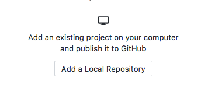
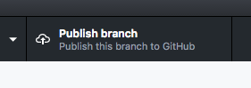
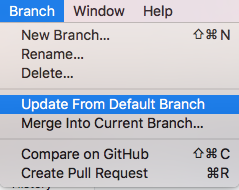

What did you learn last lesson?
Git & Github
Git workflow
Git is a version control system (VCS) that saves the state of your project's files and folders; basically, it takes a 'snapshot' of what all your files look like at a given moment and stores a reference to that 'snapshot'.
The lingo
-
Repository/Repo: a central location in which data - typically about a project - is stored and managed
-
Clone: download data/code from the cloud to your local machine (laptop, computer, etc.)
-
Commit: save a version of your project to git
-
Branch: create an additional track for the code that is separate from the 'master' branch. This allows you to work on a feature/issue without affecting the main code until your feature is finished.
Github
GitHub is a platform that makes it easy to manage git repositories. It provides a graphical interface to help you review and manage your code repos.
The files are hosted in the cloud so you can share the finished product with other people.
Why are git & GitHub valuable?
-
Stores a history of the code, which allows developers to go back in time if something breaks
-
Allows multiple developers to work on the same project
-
GitHub tracks changes so you can see who worked on what (and who broke what)
-
GitHub allows for feedback to be given on the code, which can increase code quality
Creating your repo
Either click the 'Create new project' button on the homescreen or select File > New Repository from the menu.
Give the repository a meaningful name e.g. week-1-assignment, portfolio-site and point the folder location to be in the folder alongside your starter code.
Moving files
Select all files from within your starter_code project (excluding the actual starter_code folder itself) e.g. all HTML files etc. Then place them all in your newly created Git repository folder.
Quick sidenote: If you haven't named your main/homepage file index.html, please do so now. All HTML files should also be at the root level of your project.
Review files
Review the files that have been changed since your last commit.
Review code changes
If you want, you can review the code changes within each file.
Commit
When you commit your changes, you are creating a unique 'snapshot' of your code. So be sure to write a meaningful commit message to help you find the correct 'snapshot' if you ever need to come back to this commit.
Publish
Once you've committed your first changes, you can 'publish' your repo. This will push it up to Github.
Note: Always be sure to untick the 'Keep project private' checkbox so that we can review it.
Push
Once your repo has been published, you'll then only be able to 'push' your changes. Every time you push after a commit, it will update the remote repo with your latest code.
Branching
Once your code has been pushed to your repo, you can create a new branch. For our purposes, the only branch we shall be creating is called 'gh-pages'.
This is a special GitHub branch, that will freely host your site online!
Merge code
Once you've created the gh-pages branch, now you just need to publish it.
...AND VOILÀ! You have now published your first website!
Ongoing changes
For any ongoing changes, make the changes over on the master branch.
When you're ready to update the gh-pages branch, change to gh-pages branch and then select Branch > Update from Default Branch in the menu. Then push.
Box Model
CSS Box Model
Every HTML element is represented by a set of boxes that surround the content. Each box's properties can then be manipulated to change the appearance or spacing of the element.
The 4 distinct boxes are as follows:
- Content
- Padding
- Border
- Margin
CSS Box Model (cont.)

W3C vs IE
The W3C recommendation was that the width and height of an element
would define the content-box and any other values set
on the padding, border and margin
would be additional to those values.
However, Internet Explorer had another idea...
W3C vs IE (cont.)

Codepen example
Click here
Always set box-sizing
I would recommend that from now on, every site's stylesheet that you create should have the following code snippet as the very first CSS declaration:
Everything's a box!
Just remember that in HTML, everything is just a box. Each box wraps and segregates content that can then be uniquely styled.
Let's have a little look at how General Assembly's site is layed out!
Work through the tags_boxes project.
Shorthand CSS
margin and padding are two CSS properties
that have the option of using a shorthand syntax:
-
Setting each side individually e.g.
margin-top: 25px; -
Using a 4 value syntax e.g.
margin: 25px 15px 10px 15px; -
Using a 2 value syntax e.g.
margin: 25px 15px; -
Using a 3 value syntax e.g.
margin: 25px auto 10px; -
Using a single value e.g.
margin: 25px;
Margin auto
A value of auto can be placed on an element's margins. If the element has a restricted width and is displayed as block, a value of auto on both sides will centre that element.
The selector chain
In our first CSS lesson, we had a look at classes, IDs and we also talked about specificity.
Classes vs IDs
- Classes can be used multiple times on one page
- Classes are less specific than IDs
- Classes are extremely useful for styling groups of elements with a common styling pattern
Advanced selectors
Learning how to target elements effectively for styling, beyond simply using classes, is a key skill to develop in CSS.
Let's take a look at some more ways to home in on our target elements.
Descendant selectors

What element(s) is this selector chain targeting?
Any anchor tag within any paragraph tag, that is within any section tag. Putting a space between the selectors means that you are targeting a child element.
More selectors


What are these 3 selector chains targeting?
- An element with both the classes 'quote' AND 'large'
- Elements with a class of 'quote' OR 'intro'
-
Any input tag that has an attribute of
type="submit"
Selector combinators
-
 selects matching sibling that immediately follows the first element declared
selects matching sibling that immediately follows the first element declared
-
 selects all matching elements specified that share
a parent with the first element declared
selects all matching elements specified that share
a parent with the first element declared
-
 selects the direct matching child of the first element declared
selects the direct matching child of the first element declared
Pseudo classes
-
 selects a child element whose numeric position in the
the series of child elements matches the pattern an+b.
selects a child element whose numeric position in the
the series of child elements matches the pattern an+b.
-
 applies styles to an element when the cursor hovers over it.
applies styles to an element when the cursor hovers over it.
-
 activated when the user selects the element. Typically used for form inputs.
activated when the user selects the element. Typically used for form inputs.
Key Takeaways
-
Every HTML element is made up of a set of boxes: content, padding, margin and border
-
The
box-sizingproperty is a must if you want to keep your sanity -
Always use classes to target elements for styling and IDs to target in JavaScript